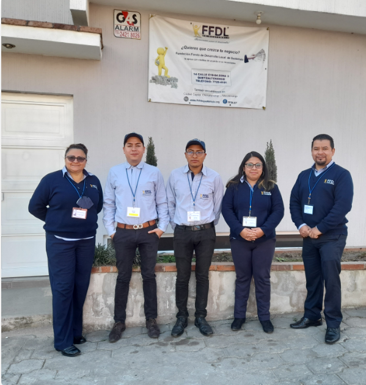

La Fundación Fondo de Desarrollo Local de Guatemala surgió en 1989 como parte del movimiento FDL y Alegria, con el objetivo de apoyar el desarrollo integral de las familias mediante microcréditos.
En 2008 se independizó y comenzó a operar como una entidad no lucrativa de inspiración privada, enfocada en servir únicamente a personas de bajos recursos.
Con 36 años de trayectoria, FDL contribuye al desarrollo integral a través del microcrédito y cuenta con oficinas en la Ciudad de Guatemala y sucursales en Chimaltenango, Quetzaltenango y Mazatenango, que atienden diversos departamentos del país.
Brindar servicios financieros y desarrollo de capacidades, a dueños de micro y pequeñas empresas, y personas excluidas, de bajo ingresos para promover la sostenibilidad económica, social y ambiental en Guatemala.
Ser una institución referente en la provisión de servicios financieros inclusivos, de calidad, con eficiencia nacional, que contribuye a mejorar la calidad de vida de los dueños de micro y pequeñas empresas, y personas asalariadas de bajos ingresos.
Transparencia en el cumplimiento de los compromisos, y responsabilidades, a lo interno y externo de la Fundación.
Dar un buen servicio interno y externo en que fomenten un ambiente de colaboración mutua y que contribuya en el crecimiento de los empresarios.
Valorar la dignidad de mandos, colaboradores y empresarios, manteniendo un clima de igualdad de oportunidades, para el desarrollo.
Actuar con integridad, proyectando con ella confianza tanto a colaboradores como empresarios.